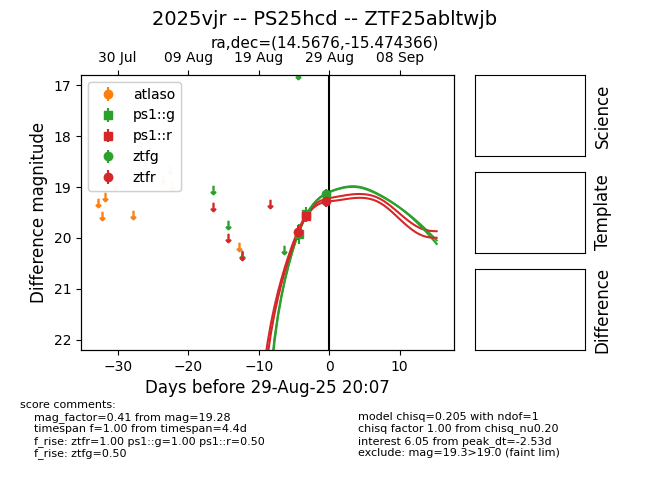

FINK: ZTF25abltwjb
Lasair: ZTF25abltwjb
ALeRCE: ZTF25abltwjb
TNS: 2025vjr
YSE: 2025vjr
2025vjr (yse,tns)
ZTF25abltwjb (ztf,fink)
PS25hcd (panstarrs)
equatorial (ra, dec) = (14.5676,-15.47437)
galactic (l, b) = (131.0337,-78.23850)

last atlasc=19.22, atlaso=18.97, ps1::g=19.16, ps1::i=19.52, ps1::r=18.89, ps1::z=19.87, ztfg=19.42, ztfr=19.38
3 atlasc, 1 atlaso, 3 ps1::g, 1 ps1::i, 2 ps1::r, 1 ps1::z, 9 ztfg, 10 ztfr detections